Home / MLF / Week 1 / Real questions
MLF week 1 - real exam questions
16 questions pulled from past papers whose wording matches this week's topics, newest first, duplicates removed. Pick your answers, then press Check answers. Figures and answer keys are the originals.
Elapsed 00:00
Find the minimum distance between the point
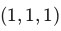
and the plane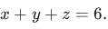
Enter your answer correct to two decimal places.Consider a classifier  for a binary classification problem as given below:
for a binary classification problem as given below:
 The dataset has four data-points.
The dataset has four data-points.  are the features and
are the features and  is the true label:
is the true label:
 Find the loss of
Find the loss of  on this dataset and enter your answer correct to two decimal places. Recall that the loss is the average number of misclassified points.
on this dataset and enter your answer correct to two decimal places. Recall that the loss is the average number of misclassified points.
for a binary classification problem as given below:
The dataset has four data-points. are the features and is the true label:
Find the loss of on this dataset and enter your answer correct to two decimal places. Recall that the loss is the average number of misclassified points.Comprehension passage for this question
Consider the following dataset in 
 Run PCA on this dataset. Based on the above data, answer the given subquestions.
Run PCA on this dataset. Based on the above data, answer the given subquestions.Let  be the unit-norm eigenvector corresponding to the smallest eigenvalue of the covariance matrix. Find the variance of the dataset along the direction . Enter the nearest integer as your answer.
be the unit-norm eigenvector corresponding to the smallest eigenvalue of the covariance matrix. Find the variance of the dataset along the direction . Enter the nearest integer as your answer.
be the unit-norm eigenvector corresponding to the smallest eigenvalue of the covariance matrix. Find the variance of the dataset along the direction . Enter the nearest integer as your answer.An ML team wants to predict whether an email is spam
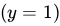
or not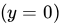
by using some classification models. Therefore, the team defines three binary features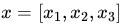
where,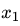
= Presence of suspicious keywords (1 = present, 0 = absent)•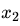
= Whether the sender is unknown (1 = unknown, 0 = known)•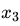
= Whether the email contains a link (1 = yes, 0 = no)• The team collects the following dataset from previously classified emails: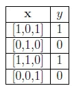
The model makes a prediction using the rule :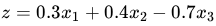
and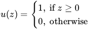
Compute the average loss on this dataset. Enter your answer correct to one decimal place.Using the method of Lagrange multipliers, find a point on the circle centered at
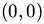
with radius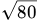
that is closest to the point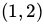
. If this distance is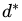
, enter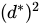
as your answer. Your answer should be an integer.Let  . Find the directional derivative of
. Find the directional derivative of  at the point
at the point  in the direction of unit vector along
in the direction of unit vector along  .
.
. Find the directional derivative of at the point in the direction of unit vector along .


Consider two datasets in  ,
,  and
and  , each having three points as shown below. The figure is drawn to scale. PCA is run on both these datasets separately.
, each having three points as shown below. The figure is drawn to scale. PCA is run on both these datasets separately.

 and
and  are the covariance matrices of the two datasets respectively. If
are the covariance matrices of the two datasets respectively. If  is the eigenvector corresponding to the largest eigenvalue of and
is the eigenvector corresponding to the largest eigenvalue of and  is the eigenvector corresponding to the smallest eigenvalue of , find the absolute value of
is the eigenvector corresponding to the smallest eigenvalue of , find the absolute value of  . Both eigenvectors have unit norm. Your answer should be an integer.
. Both eigenvectors have unit norm. Your answer should be an integer.
, and , each having three points as shown below. The figure is drawn to scale. PCA is run on both these datasets separately.
and are the covariance matrices of the two datasets respectively. If is the eigenvector corresponding to the largest eigenvalue of and is the eigenvector corresponding to the smallest eigenvalue of , find the absolute value of . Both eigenvectors have unit norm. Your answer should be an integer.Anil throws a dart onto a circular board. Let a random variable  denote the distance from the center to the point where the dart hits the board. Suppose the PDF of is
denote the distance from the center to the point where the dart hits the board. Suppose the PDF of is
 Calculate the value of
Calculate the value of
 . Enter the answer correct to two decimal places.
. Enter the answer correct to two decimal places.
denote the distance from the center to the point where the dart hits the board. Suppose the PDF of is
Calculate the value of
. Enter the answer correct to two decimal places.A bank wants to decide whether a loan applicant should be given a loan or not, based on features like income, credit score and past records. Which of the following machine learning techniques is applicable for this scenario?
- Regression
- Classification
- Clustering
- Dimensionality Reduction
Comprehension passage for this question
Based on the above data, answer the given subquestions.

If the threshold in the step function is changed to z ≥ 1.0, what will happen to the misclassification rate?
- Increase
- Decrease
- Remain same
- Cannot be determined
Which of the following is/are supervised learning task(s)?
- Predicting future sales of a product based on the past sales data.
- Reducing the dimensionality of images while retaining essential features,enabling efficient storage and transmission.
- Recognizing and interpreting handwritten characters or words, often used indigit recognition or reading handwritten text.
- Categorizing text documents into predefined classes, such as spam or non-spam emails.
Which among the following statements are true about principal component analysis (PCA)?
- PCA is a supervised learning algorithm.
- Principal components are the eigenvectors of the sample covariance matrix.
- Principal components are eigenvectors of the centered data matrix.
- If p1 and p2 are the principal component vectors, then p1 is orthogonal to p2.
Consider the following input data points:
 Consider the following input data points: Which among the following models has the least misclassification error?
Consider the following input data points: Which among the following models has the least misclassification error?
Consider the following input data points: Which among the following models has the least misclassification error?- Sign(x1 − 2)
- Sign(x2 + 2)
- Sign(x1 + x2)
- Sign(x2 − x1)
Which of the following statements accurately describes the key difference between classification and regression models?
- In classification, the output variable is continuous and real-valued, while inregression, it is categorical.
- Regression models are used for predicting probabilities, whereas classificationmodels focus on predicting absolute values.
- Classification models aim to find decision boundaries to separate data intoclasses, while regression models seek to predict a numeric value.
- In regression, the commonly used loss function is mean squared error, whilein classification, 0 -1 loss is typically employed.
Which of the following statements regarding classification and regression models are correct ?
- The task of the regression algorithm is to map the input value (x) with thecontinuous output variable (y) but the task of the classification algorithm is to map the inputvalue(x) with the discrete output variable(y).
- In Classification, we try to find the decision boundary, which can divide thedataset into different classes but In Regression, we try to find the best fit line, which can predictthe output more accurately.
- The Classification Algorithm can be further divided into Linear and Non-linearclassifier and the regression algorithms can be divided into Binary regression and Multi-classregression.
- The task of the regression algorithm is to map the input value (x) with thediscrete output variable (y) but the task of the classification algorithm is to map the input value(x)with the continuous output variable(y).
Identify which of the following requires use of classification technique.
- Credit card fraud detection.
- Sentiment analysis.
- Predicting whether an email is spam or not.
- Predicting whether the patient is having cancer or not.